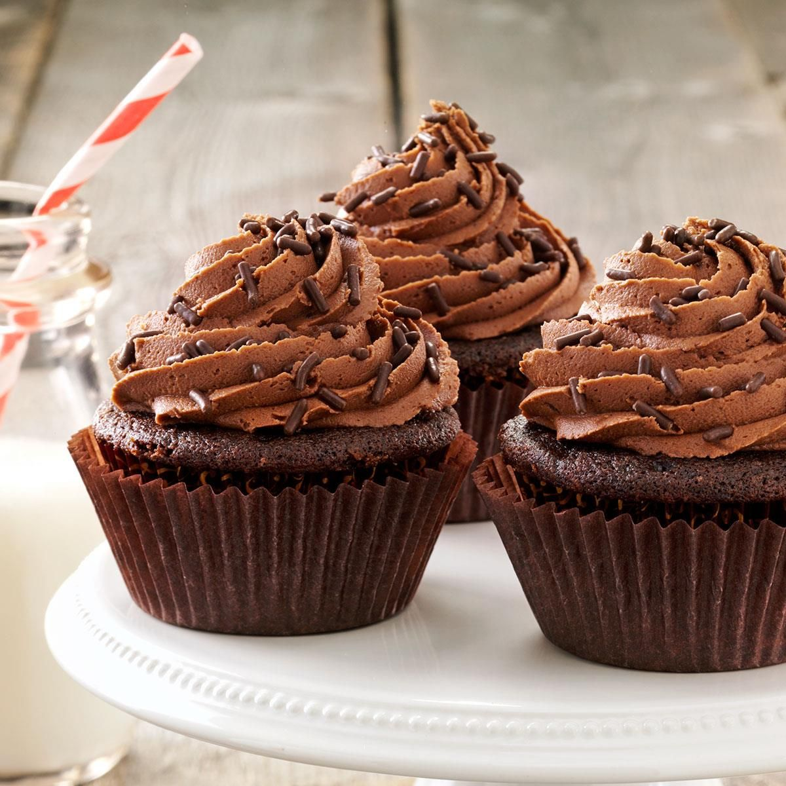

Desserts recipes
Chocolate Cupcakes

| Products |
weight |
| Butter |
10 tablespoons |
| Sugar |
¼ cups |
| Eggs |
4 pcs. |
| Flour |
½ cups |
| Cocoa powder |
¾ cup unsweetened |
| Baking powder |
2 teaspoons |
| Salt |
¼ teaspoon |
| Milk |
¾ cup |
| Vanilla extract |
1 teaspoon |
- Preheat oven to 350 degrees F (175 degrees C). Grease two muffin pans or line with 20 paper baking cups.
- In a medium bowl, beat the butter and sugar with an electric mixer until light and fluffy. Mix in the eggs, almond extract and vanilla. Combine the flour, cocoa, baking powder and salt; stir into the batter, alternating with the milk, just until blended. Spoon the batter into the prepared cups, dividing evenly.
- Bake in the preheated oven until the tops spring back when lightly pressed, 20 to 25 minutes. Cool in the pan set over a wire rack. When cool, arrange the cupcakes on a serving platter. Frost with your favorite frosting.
- Decorate the cupcakes as desired